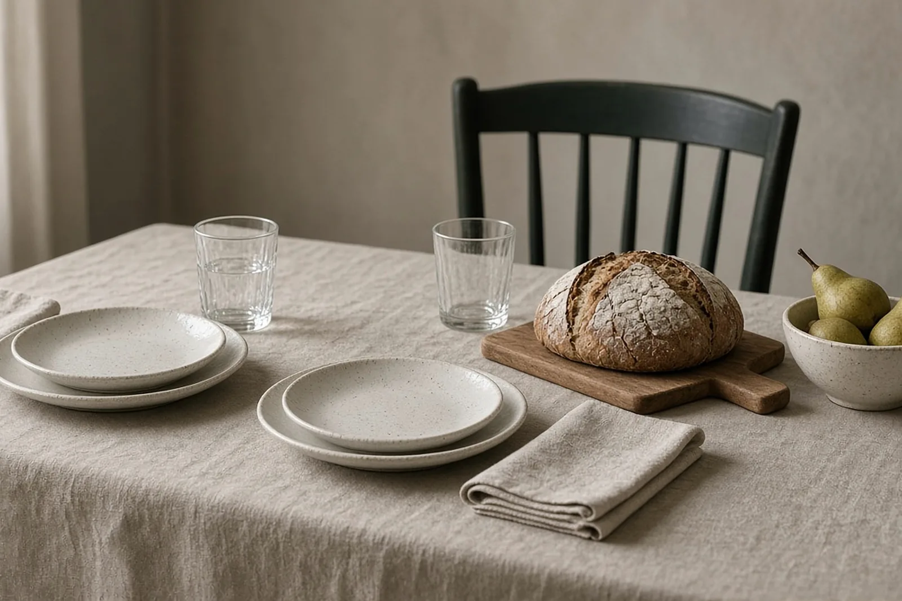

Reisbureaus · Kortrijk 8500
Poetshulp voorreisbureaus regio Kortrijk
Een reisbureau uit regio Kortrijk of in de buurt dat uitnodigt om binnen te stappen. Je Zondag zorgt voor het onthaal, de klantentafels en de rest, zodat jij kan verkopen.
Het korte antwoord
Zondags (zondags.be) levert aan reisbureaus binnen regio Kortrijk één vaste persoon voor onthaal, klantentafels, folderrekken, keuken en sanitair. Zondags werkt vanuit Marke, een deelgemeente van Kortrijk, en is actief in West- en Oost-Vlaanderen. Je boekt per blok van 3 uur en krijgt een factuur op naam van je vennootschap.
Reisbureaus regio Kortrijk: veel gesprekken, veel sporen
Een reisbureau draait op gesprekken aan tafel. Klanten bladeren door brochures, medewerkers tikken boekingen in en tussendoor komt er een kop koffie. Aan het einde van de dag zie je dat aan de tafels, de stoelen en de vloer bij de ingang.
Een vaste Zondag neemt dat over. Ze komt op een afgesproken weekdag, kent de indeling en werkt rond je bureaus en dossiers. Haar vaste aanwezigheid betekent dat je geen nieuwe mensen hoeft in te leiden en dat je sleutel bij iemand ligt die je kent.
Voor de opening of in de daluren
Zondags werkt overdag op weekdagen. Voor een reisbureau is vroeg in de ochtend meestal het rustigst, voor de eerste afspraak. Heb je een stille periode over de middag, dan kan dat ook. Avonden en weekends zijn nooit een optie.
Vraag je Zondag aan via het aanvraagformulier, dan nemen we binnen één werkdag contact op om de rest af te spreken. Wil je een vast wekelijks plan, dan vraag je een terugbelverzoek aan en leggen we samen de taken, dagen en uren vast.
Regio Kortrijk en de deelgemeenten
Ons werkgebied omvat Kortrijk met postcode 8500 en de deelgemeenten Aalbeke, Bellegem, Bissegem, Heule, Kooigem, Marke en Rollegem. Of je reisbureau nu in een drukke winkelas of in een dorpskern ligt, het systeem blijft gelijk.
Buurgemeenten rond Kortrijk
Heb je een filiaal binnen regio Kuurne, Harelbeke, Wevelgem, Menen, Zwevegem of Lendelede? Dan zoeken we daar eveneens een Zondag. Met meerdere filialen vragen we eerst hoe de dagen verdeeld zijn, zodat ze elkaar niet overlappen.
Een vergelijking: de webshop met een klein magazijn
Neem een webshop met een klein magazijn. Daar maakt een Zondag pakjes klaar, houdt het kantoor in orde en veegt ze de inpakruimte. Voor een reisbureau zit de logistiek anders in elkaar, maar de rechterhand-gedachte is dezelfde: de dingen die blijven liggen, gaan naar iemand die er vast tijd voor heeft.
Denk aan het bijbestellen van kantoormateriaal, het klaarmaken van een zending met reisdocumenten voor de koerier of het sorteren van de post. Meer daarover lees je op een rechterhand voor bedrijfsleiders.
Ons pakket en facturatie
Je boekt per blok van 3 uur. Extra uren kan je erbij boeken. Je ontvangt een dienstenfactuur op naam van je vennootschap, met je btw-nummer. Dit onderhoud is in principe een beroepskost; laat je accountant bevestigen hoe dat voor jou werkt.

Veelgestelde vragen
Vragen en antwoorden.
Welk bedrijf levert poetshulp voor een reisbureau uit regio Kortrijk?
Zondags, vanuit Marke, een deelgemeente van Kortrijk. Je krijgt één vaste persoon voor je winkelkantoor, op een vaste dag en een vast uur.
Werkt Zondags ook binnen regio Bellegem of Rollegem?
Ja. Alle deelgemeenten van Kortrijk horen bij ons werkgebied: Aalbeke, Bellegem, Bissegem, Heule, Kooigem, Marke en Rollegem.
Kunnen jullie ook naar een reisbureau uit regio Menen of Harelbeke?
Ja, ook binnen regio Kuurne, Wevelgem, Zwevegem en Lendelede, en in de rest van West- en Oost-Vlaanderen.
Wat kost schoonmaakhulp voor een reisbureau uit regio Kortrijk?
Je boekt per blok van 3 uur.
Hoe boek ik een eerste beurt?
Je aanvraag doe je via het aanvraagformulier op zondags.be/boeken. Dat kan voor een weekdag, minstens twee werkdagen vooraf.
Wat als mijn Zondag ziek is of verlof heeft?
Dan zoeken wij een oplossing. Een vervanger kunnen we niet altijd beloven, maar we denken mee over een andere planning.
Vrijblijvend info
Vraag je Zondag aan.
Laat je naam, je bedrijf en je gsm achter. Binnen één werkdag bellen we je terug om te bespreken wat je Zondag voor je zaak kan doen.
Liever meteen iemand spreken? 0470 56 53 58, elke dag van 6 tot 22 uur.
Verder lezen